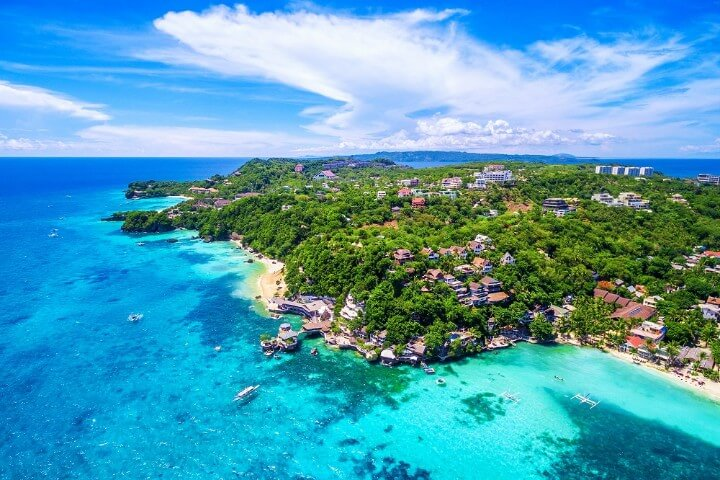
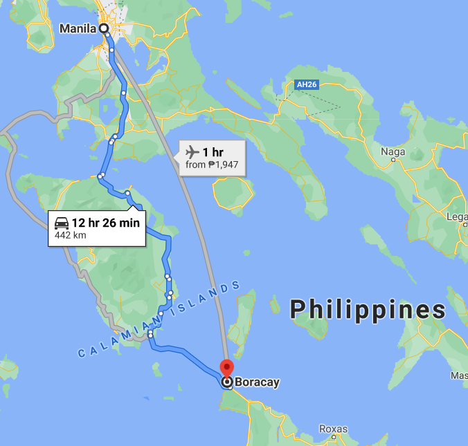
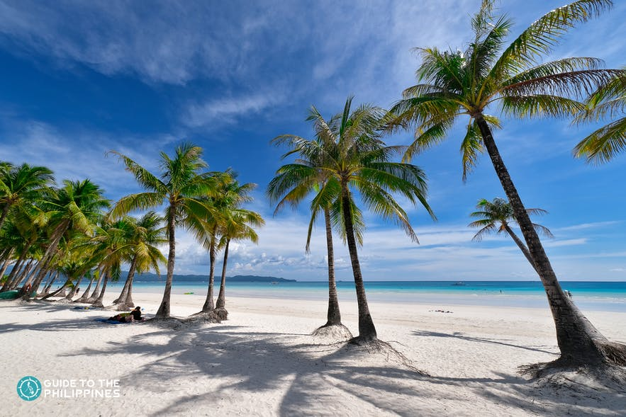
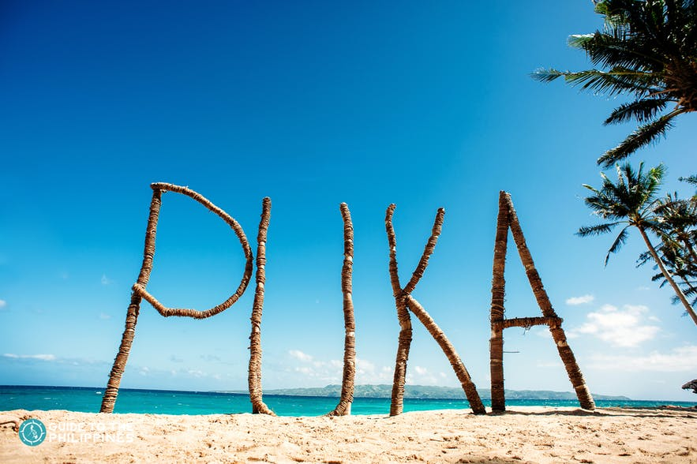
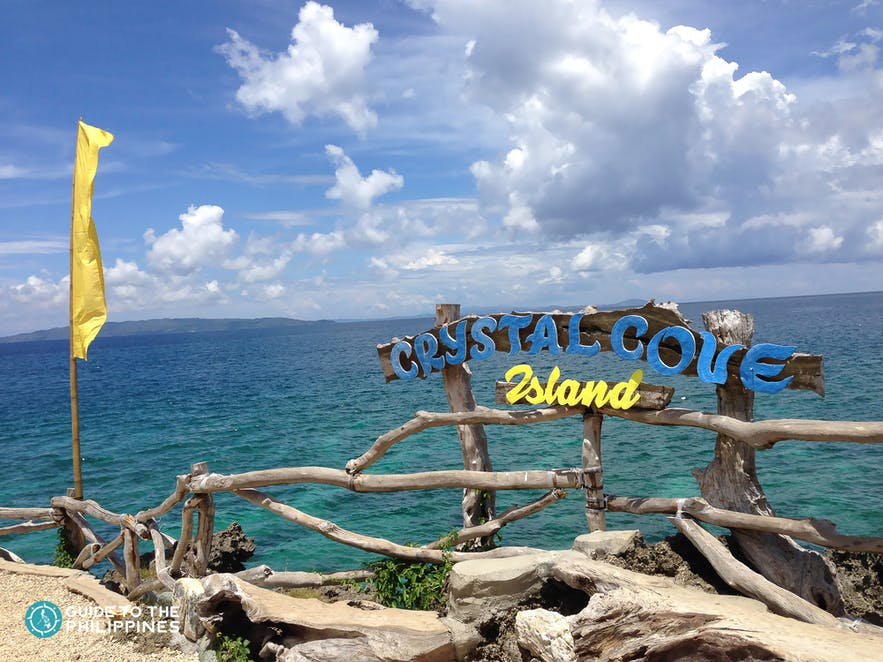

Boracay

Boracay
([bɔˈrakaɪ]) is a small island in the Philippines, 7 km long and 1 km wide, located in the Western
Visayas approximately 315 kilometres (196 miles) south of Manila and about 0.8 kilometres (0.50 mi)
off the northwest tip of Panay Island.
Boracay was awarded as the 2012 Best Island in the World by the international travel magazine Travel
+ Leisure. In 2014, the resort island was at the top of the "Best Islands in the World" list
published by the international magazine Condé Nast Traveler. In 2016, Boracay headed the magazine's
list of "Top 10 destinations to watch".
How to get there?

From Manila
you can choose to travel to Boracay via either Kalibo Airport or Caticlan which is otherwise known
as Boracay Airport. Caticlan is 30 minutes from Boracay so it’s the most convenient option. Flights
to Kalibo are usually a bit cheaper, but from Kalibo it takes about 2 hours to reach Boracay. So if
you prefer convenience, go with Caticlan. If you’re on a tight budget on the other hand, then Kalibo
may be the better option.
Destinations in Boracay

- White Beach is Boracay's main tourist attraction and understandably the most jam-packed
area since the most popular activity in the island is the Boracay sightseeing beach trip. Aside from
the undeniable charm of the beautiful white sand and sparkling azure waters, everything you need is
a stone's throw away from White Beach.

- Puka Beach is a 20-minute tricycle ride away from White Beach. You can bring your mats if you
plan to stay here for a couple of hours. This popular travel destination is one of the beaches
included in most island-hopping excursions in Boracay.

- Crystal Cove Island originally known as Tiguatian Island by the locals, this island
become popular due to its unique crystal protrusions. It has two limestone coves accessible through
snorkeling. You can also feed pigeons and pick up seashells for collection.